항로표지기사 (2017-08-26 기출문제)
1과목: 항로표지일반
1. 항로표지 설계 시 파압력 계산에 적용되는 정수면은?
- 최고고조면
- 평균수명
- 기본수준면
- 평균고조면
(정답률: 84%)

2. 항로표지의 광달거리에 관한 내용으로 적합하지 않은 것은?
- 등화의 높이는 광달거리와 관계가 없다.
- 시계가 나쁘면 광달거리는 현저히 감소한다.
- 광력이 약한 등광일수록 광달거리가 불규칙하다.
- 대기의 상태에 따라 해도나 등대표에 기재되어 있는 광달거리 보다 커지는 경우도 있다.
(정답률: 82%)
3. 항로표지법상 항로표지 이용료의 전부 또는 일부를 면제할 수 있는 선박이 아닌 것은?
- 우리나라 군함
- 원양어업에 사용되는 어선
- 해난을 피하기 위하여 기항하는 선박
- 대한민국과 상호주의 원칙이 적용되는 외국의 탐사선
(정답률: 77%)
4. IALA 해상부표식에서 A지역과 B지역이 서로 다르게 적용되는 표지는?
- 방위표지
- 측방표지
- 고립장해표지
- 안전수역표지
(정답률: 91%)
5. 다음 중 고립장해표지의 도색으로 가장 적합한 것은?
- 흑색바탕에 하나의 넓은 황색횡대
- 황색바탕에 하나의 넓은 흑색횡대
- 흑색바탕에 하나의 넓은 홍색횡대
- 홍색바탕에 하나의 넓은 흑색바탕
(정답률: 93%)
6. 군섬광으로 매 5초에 2섬광 하는 백색광의 표지는?
- 좌현표지
- 특수표지
- 고립장해표지
- 북방위표지
(정답률: 85%)
7. 등탑의 기초 설계 시 지반 내에 기초를 얕게 매설하여 측면반력, 저면반력에 대해 안정을 유지하는 형식은?
- 부착식 기초
- 중력식 기초
- 반력식 기초
- 블록식 기초
(정답률: 43%)
8. 항로표지법상 항로표지에 대한 설명으로 틀린 것은?
- 해양수산부장관이 설치∙관리한다.
- 항해하는 선박의 지표가 되는 시설이다.
- 법으로 정해진 항로에만 설치할 수 있다.
- 해양수산부장관 이외의 자도 허가를 받아 설치할 수 있다.
(정답률: 64%)
9. 항로표지법상 검사대행기관이 검사대행업무를 휴지 또는 폐지하고자 할 경우에는 휴지 또는 폐지하려는 날로부터 몇 일전까지 해양수산부장관에게 휴지(폐지) 신고서를 제출하여야 하는가?
- 7일
- 15일
- 30일
- 60일
(정답률: 75%)
10. 다음 ( )안에 들어갈 내용으로 가장 적합한 것은?
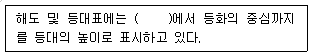
- 만조수면
- 평균해면
- 약최저저조면
- 약최고고조면
(정답률: 54%)
11. 항로표지법상 항로표지를 기능에 따라 특수항로표지로 구분할 경우, 특수항로표지에 속하는 것은?
- 조류신호표지
- 공사목적용표지
- 해양기상신호표지
- 자동위치식별신호표지
(정답률: 80%)
12. 항로표지시설 관리지침상 등부표의 예비표지용품 보유기준 중 태양전지의 보유기준은 설치수를 기준으로 몇 %인가?
- 10%
- 20%
- 30%
- 40%
(정답률: 54%)
13. 선박의 속력을 나타내는 단위이며, 1시간당 1해리 달리는 선박의 속력 표기 방법 중 맞는 것은?
- 1M
- 1m
- 1nt
- 1kt
(정답률: 67%)
14. 우리나라 해도에서 사용하고 있는 기준면에 대한 설명으로 틀린 것은?
- 수심은 기본수준면
- 해안선은 약최고고조면
- 간출암의 높이는 평균해면
- 육상물표의 높이는 평균해면
(정답률: 62%)
15. 항해자가 도등을 바라보았을 때 눈부심을 방지하기 위하여 도등의 이용구간 내에서의 어느 지점에서나 도등의 등화에 의해 생기는 항해자의 각막 조도는 몇 lux를 초과하여서는 안 되는가?
- 0.1
- 1
- 5
- 10
(정답률: 80%)
16. 항구에서 출항하는 선박이 공사가 완료된 좌측 방파제상에 등대를 보았을 때 등색은?
- 등색은 백색광이다.
- 등색은 녹색광이다.
- 등색은 홍색광이다.
- 등색은 황색광이다.
(정답률: 75%)
17. 선박의 위치를 구하는데 이용하는 위치선이 아닌 것은?
- 방위에 의한 위치선
- 중시선에 의한 위치선
- 수평협각에 의한 위치선
- 최근접 거리에 의한 위치선
(정답률: 65%)
18. 조류신호시스템에서 전광표지판 방식에 대한 설명 중 틀린 것은?
- 유향은 영문표기에 의한 16방위로 표시한다.
- 유속은 0.0~0.0 노트까지 숫자로 표기한다.
- 전광표지판은 투과식, 반사식, 직사식 등이 있다.
- 조류의 증가, 감소의 경향을 각각 상향 및 하향의 화살표로 표시한다.
(정답률: 79%)
19. 등대 및 등주 부근에서 선박에 장해물의 존재를 알리기 위하여 암초나 방파제 끝 및 위험구역 등을 비추는 항로표지는?
- 등대
- 등표
- 도등
- 조사등
(정답률: 73%)
20. 자기자오선과 자극을 지나는 진자오선이 관측자의 위치에서 이루는 교각을 무엇이라 하는가?
- 편차 (Variation)
- 자차 (Deviation)
- 방위각 (Bearing angle)
- 컴퍼스 오차 (Compass error)
(정답률: 73%)
2과목: 전기·전자기초
21. 철심이 든 환상 솔레노이드에서 기자력 1000 AT에 의해 5×10-5Wb의 자속이 철심을 통과한다. 이 철심의 자기저항은 몇 AT/Wb인가?
- 2×10-7
- 2×107
- 5×10-2
- 5×102
(정답률: 42%)
22. 직류발전기의 병렬운전조건이 아닌 것은?
- 각 발전기의 유기기전력과 극성이 같아야 한다.
- 외부 특성곡선이 수하특성이어야 한다.
- 정격용량이 같다면 외부특성곡선이 동일해야 한다.
- 정격용량이 다르면 외부특성곡선이 반비례해야한다.
(정답률: 43%)
23. 두 단상전력계 W1, W2를 사용하여 3상 교류전력을 측정할 때 3상 전력의 값은?
- W1의 지시값 + W2의 지시값
- 3 × (W1의 지시값 + W2의 지시값)
- √3 × (W1의 지시값 + W2의 지시값)
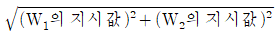
(정답률: 64%)
24. 극판 간의 거리가 2mm인 평형판 축전지에 100V의 전압을 가할 때 축전지의 내부에 생기는 전계의 세기(V/m)는?
- 5×102
- 5×103
- 5×104
- 5×105
(정답률: 47%)
25. 가동코일형 기기의 특징과 거리가 먼 것은?
- 교류 전용으로 사용된다.
- 플레밍의 왼손법칙을 따른다.
- 눈금은 일반적으로 균등하다.
- 지침의 회전각은 계기에 흐르는 전류에 비례한다.
(정답률: 42%)
26. 다음 중 태양전지에 관한 설명으로 틀린 것은?
- 원재료로 주로 실리콘이 사용된다.
- 입사광이 최대로 반사되도록 해야 한다.
- 입사광에 의해 전자와 전공이 만들어 진다.
- 모듈 온도가 동일할 때 단락전류는 방사조도에 비례한다.
(정답률: 59%)
27. 저항이 10Ω인 도선에 10A 전류가 1분 동안 흐를 때 회로에 소비되는 전력이 모두 열로 변환되었다면, 발생한 열량은 약 몇 kcal인가?
- 14.4
- 22.4
- 34.4
- 64.3
(정답률: 47%)
28. 직류기의 주요 구성 요소가 아닌 것은?
- 공극
- 계자
- 정류자
- 전기자
(정답률: 54%)
29. 직류발전기에서 섬락이 생기는 가장 큰 이유는?
- 저속 운전
- 장시간 운전
- 부하의 급변
- 경부하 운전
(정답률: 60%)
30. 서로 결합된 두 개의 코일을 직렬로 연결하면 합성 인덕턴스는 20mH가 되고 한쪽 코일을 반대 방향으로 연결하면 합성 인덕턴스는 12mH가 된다고 한다. 두 코일간의 상호 인덕턴스는 몇 mH인가?
- 1
- 2
- 4
- 5
(정답률: 74%)
31. 전선의 저항과 같은 1Ω이하의 낮은 저항을 측정하기에 가장 알맞은 것은?
- 전위차계법
- 전압 강하법
- 휘트스톤 브리지법
- 켈빈더블 브리지법
(정답률: 70%)
32. 6F와 3F의 콘덴서를 직렬로 접속하면 합성 커퍼시텐스는 몇 F인가?
- 2
- 3
- 6
- 9
(정답률: 65%)
33. 무정전전원장치(UPS)의 주요 구성요소가 아닌 것은?
- 증폭기
- 인버터
- 축전지
- 정류기
(정답률: 50%)
34. 교류발전기의 주파수가 60Hz이고 매분 600회전을 한다면 극수는 얼마인가?
- 10
- 12
- 24
- 36
(정답률: 77%)
35. 다음 중 전력용 반도체 소자로서 턴온, 턴오프 제어가 불가능한 소자는?
- SCR
- GTO
- IGBT
- DIODE
(정답률: 75%)
36. 고정항 측정계인 메거(Megger)로 접지 절연저항, 선간 절연저항, 통전(도통)시험 등을 측정하거나 실시할 경우 가장 옳은 설명은?
- 매거의 지침은 선로측 단자와 접치측 단자를 개방한 상태에서 작동시키면 0을 지시한다.
- 선간 절연저항을 측정할 경우, 메거의 지침이 무한대 값일 때는 절연이 양호함을 나타낸다.
- 변압기 코일의 통전 시험은 각 단자를 접속한 메거를 작동시켜서, 지침이 무한대를 지시하면 통전(도통)하고 있다.
- 접지 절연저항을 측정할 경우 메거의 각 단자를 접속한 후 작동시킬 때, 측정한 저항 값이 0이면 양호하므로 사용하는데 지장이 없다.
(정답률: 54%)
37. 축전지의 충전방식이 아닌 것은?
- 보통충전
- 급속충전
- 분리충전
- 부동충전
(정답률: 67%)
38. 축전지의 설비용량을 결정하는 사항이 아닌 것은?
- 6.36
- 3.18
- 2.12
- 1.09
(정답률: 31%)
39. 두 자극 사이에 작용하는 힘(F)을 나타내는 쿨롱의 법칙으로 옳은 것은?
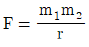
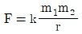
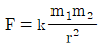
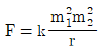
(정답률: 70%)
40. 직류발전기에서 전기자 반작용을 상쇄하기 위하여 설치하는 것은?
- 보극
- 균압선
- 브러시
- 슬립링
(정답률: 67%)
3과목: 광파·음파표지
41. 고유진동의 주파수와 외부에 주어지는 외력의 진동수가 같아서 진폭이 최대가 되는 현상은?
- 회절
- 간섭
- 비트
- 공명
(정답률: 85%)
42. 빛의 성질에 있어서 입사각(입사광선과 법선이 이루는 각)이 굴절각 90°가 되는 입사각보다 크게 되면 빛은 경계면에서 완전히 반사하는데 이 현상은?
- 경면 반사
- 전반사
- 와전확산반사
- 불완전확산반사
(정답률: 62%)
43. 명목적 광달거리 산출시 적용하는 IALA 권고에 따른 대기투과율은?
- 0.85
- 0.74
- 0.54
- 0.34
(정답률: 80%)
44. 준설항로나 협소한 자연적 항로상에 등부표 설치기준으로 틀린 것은?
- 준설항로는 준설법선 외측에 침추를 병렬방향으로 붙여 설치한다.
- 자연적 항로는 가항수로의 한계선에 설치한다.
- 항해에 위험을 초래하는 항로나 또는 항계부근에 존재하는 고립장해물에는 필요한 경우에 설치한다.
- 굴곡 위치에는 거리에 관계없이 필요한 경우 설치한다.
(정답률: 34%)
45. 지리학적 광달거리 결정요소가 아닌 것은?
- 등화 및 관측자의 수면상의 높이
- 지구의 곡률
- 표지 등화의 광도
- 대기굴절
(정답률: 75%)
46. 1kHz의 음을 파장으로 표시하면?
- 34cm
- 54cm
- 74cm
- 94cm
(정답률: 62%)
47. 빛의 광도, 대기투과율, 관측자의 눈에서의 조도의 역치에 의하여 결정되는 광달거리를 무엇이라 하는가?
- 지리적 광달거리
- 광학적 광달거리
- 명목적 광달거리
- 명시적 광달거리
(정답률: 84%)
48. 등부표의 법정(권고) 항로상 설치기준에 대한 설명으로 틀린 것은?
- 설치간격은 육안으로 볼 수 있는 정도로서 10해리 이내로 한다.
- 법선을 명확히 확보하기 위하여 항로의 양측에 설치한다.
- 변침점에 설치한다.
- 위험한 장해물 위치에 설치한다.
(정답률: 58%)
49. 일반적으로 대기온도에서 상층온도가 저온일 경우 지표에 가까울수록 음속은 어떻게 변화하는가?
- 음속이 커진다.
- 음속이 작아진다.
- 음속이 동일하다.
- 음속이 커졌다 작아진다.
(정답률: 59%)
50. 등대의 설계 시에 고려하여야 할 설계파고(Hd)란 해당 구조물에 작용하는 어떤 파고를 말하는가?
- 평균파고
- 최저파고
- 최대파고
- 쇄파한계파고
(정답률: 70%)
51. 우리나라에서 사용하는 교량등의 등색으로 옳은 것은?
- 교각등 - 황색
- 경간등 - 백색
- 중앙등 - 녹색
- 우측단등 - 황색
(정답률: 82%)
52. 랜비(LANBY)의 성능 기준에 대한 설명으로 틀린 것은?
- 음향신호는 보통 위험물 경고용으로 필요하다.
- 신호 등화는 충분한 가시거리를 가져야 한다.
- 부체는 대형으로 안정성은 고려하지 않아도 된다.
- 고장 시에는 즉시 항해자에게 통보하여야 한다.
(정답률: 80%)
53. 등대의 기초의 종류 중 얕은 기초에 해당하지 않는 것은?
- 중력식 기초
- 반력식 기초
- 부착식 기초
- 앵커식 기초
(정답률: 67%)
54. 시감 투과율이란?
- 물체를 투과 하는 광속과 진공상태에서 투과하는 광속과의 비율
- 대기의 투과율과 물체의 투과율과의 비율
- 물체를 통과하는 광속과 물체에 입시하는 광속과의 비율
- 채색유리의 투과율과 필터의 투과율과의 비율
(정답률: 74%)
55. 다음 중 무신호기의 종류가 아닌 것은?
- 에어싸이렌
- 다이아폰
- 레이더비콘
- 모터사이렌
(정답률: 75%)
56. 마스킹효과에 대한 설명으로 옳은 것은?
- 가청주파수의 맥동현상이다.
- 음압의 온도에 따른 변화를 말한다.
- 어떤 소리가 다른 소리를 들을 수 있는 능력을 감소시키는 현상이다.
- 음향의 회절과 굴절 현상이다.
(정답률: 75%)
57. 다음 내용이 설명하는 것은?
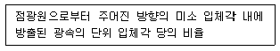
- 광도
- 휘도
- 조도
- 음속
(정답률: 84%)
58. 등부표의 계산 기준 수심이 25m일 때 등부표 체인의 길이(m)는? (단, 수평력 : 1387.63kgf, 체인의 수중 중량 : 27.42kgf/m)
- 35.56
- 46.32
- 50.6
- 56.17
(정답률: 31%)
59. 300~500Hz 저주파의 음향을 발사하는 전자식 무신호기로 비교적 음량이 적은 음파표지는?
- 모터사이렌
- 전기혼
- 다이아폰
- 에어사이렌
(정답률: 88%)
60. 표준형등표의 종류가 아닌 것은?
- LLP-34
- LL-28
- LS-35
- LANBY-100
(정답률: 70%)
4과목: 전파표지 및 시스템이용
61. 레이더의 거짓영상 중 전파가 자선과 물표 사이를 2회 이상 왕복하여 실체 하나의 물표의 영상이 등간격으로 여러 개 나타나는 것은?
- 간접반사
- 2차 소인반사
- 거울면 반사
- 다중반사
(정답률: 73%)
62. 레이콘의 설치장소로서 적합하지 않은 곳은?
- 협수로 등의 주요 목표물 또는 위험한 장해점
- 레이더에 잘 나타나는 노출암
- 다른 항해선박의 영상과 오인되기 쉬운 장해물
- 모래 언덕 등의 장애물
(정답률: 67%)
63. 조류신호소에서 이용되는 조류 측정 센서가 아닌 것은?
- 젯트형
- 임펠러형
- 전자유도형
- 도플러 소나형
(정답률: 82%)
64. 선박용 X밴드 레이더에서 주로 사용되는 주파수대는?
- 3000MHz
- 5000MHz
- 7000MHz
- 9000MHz
(정답률: 64%)
65. 진공중에서 주파수 100kHz의 파장(m)은?
- 3000
- 1000
- 30
- 10
(정답률: 70%)
66. 대류권파의 페이딩에 해당되지 않는 것은?
- 도약성 페이딩
- 산란형 페이딩
- Duct형 페이딩
- K형 페이딩
(정답률: 42%)
67. 해상 전파의 중파 DGPS신호 수신 전계강도 E(dBμV/m)를 구하는 식은? (단, Pr : 복사전력(kW), d : 거리(km))
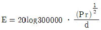
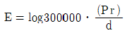
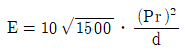
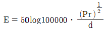
(정답률: 80%)
68. eLORAN의 기술적인 특징에 대한 설명으로 틀린 것은?
- 각 송신국은 보정국에서 보정 받은 보정정보를 송출하고 시각동기 주파수를 제어
- 각 국은 디퍼렌셜 로란 기능으로서 기준국이 됨
- 정확도는 50~100m
- 각 송신국에 대한 시각동기는 TOT 제어방식을 사용
(정답률: 54%)
69. GPS의 항법 메시지에서 위성의 궤도정보가 들어있는 프레임은?
- 제2 서브프레임
- 제4 서브프레임
- 제6 서브프레임
- 제8 서브프레임
(정답률: 50%)
70. LORAN-C의 통제방식 중 “기선상에 있는 종국의 LORAN-C감시용 수신기로 부터의 정보를 이용한 기선통제”는?
- Alpha통제
- Bravo통제
- Charlie통제
- Delta통제
(정답률: 74%)
71. 지표파의 전파에 대한 설명으로 틀린 것은?
- 지표파의 유전율이 클수록 감쇠를 적게 받는다.
- 주파수가 낮을수록 감쇠를 적게 받는다.
- 지표의 도전율이 클수록 감쇠를 적게 받는다.
- 수평편파 보다는 수직편파 쪽이 감쇠가 적다.
(정답률: 70%)
72. DGPS의 방송 내용에서 특별메시지의 포맷번호로서 옳은 것은?
- 3번
- 7번
- 9번
- 16번
(정답률: 75%)
73. 마이크로파용 안테나의 특징으로 옳지 않은 것은?
- 고지향성이다.
- 파장이 짧이 때문에 크기를 소형으로 하여 고이득을 얻을 수 있다.
- 이득이나 지향성은 안테나 개구 면적에 반비례한다.
- 송수신안테나의 결합도를 작게 할 수 있어 송수신기를 동일 장소에 설치할 수 있다.
(정답률: 70%)
74. 조류신호소에서 제공하는 정보가 아닌 것은?
- 조류의 방향
- 조류의 속도
- 유속의 증감
- 조석의 시간
(정답률: 70%)
75. 조류신호소의 주요 장비에 해당되지 않는 것은?
- 조류신호방송시스템
- 조류측정시스템
- 조류신호처리시스템
- 조류신호표지시스템
(정답률: 54%)
76. 수직접지 안테나의 복사저항이 50Ω이고, 손실저항이 3Ω일 경우 안테나 효율은 약 몇 %인가?
- 94
- 56
- 36
- 25
(정답률: 50%)
77. GPS 측위 오차가 아닌 것은?
- 위성시계 오차
- 대류층 오차
- 전리층 오차
- 대기온도 오차
(정답률: 82%)
78. height pattern 이란?
- 직접파와 회절파의 간섭에 의하여 생성되는 그래프
- 송수신 안테나와 수신점까지의 거리에 따른 그래프
- 수신안테나의 높이에 따라 수신 전계 강도가 달라지는 그래프
- 전파 가시거리의 그래프
(정답률: 63%)
79. LOARAN-C 시스템에서 주국의 기능으로 거리가 먼 것은?
- 소정의 허용치 내에서 적합한 포맷에 의하여 신호 송신
- 종국신호 감시
- 통제국 지시에 의하여 블링크
- 적당한 복사시간 지연량 유지
(정답률: 65%)
80. LORAN-C 체인을 구성함에 있어 송신국의 배치를 결정하는 기본형이 아닌 것은?
- Triad 형
- W형
- Y형
- Star형
(정답률: 알수없음)